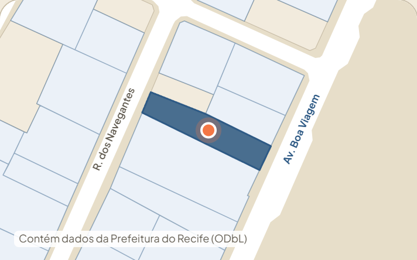

Parque Atlântico
Boa Viagem · 58 m² · 14º andar

Bolso · por mês
~R$ 6.805
para entrar, R$ 152 mil · anúncio: R$ 1.075
Prédio
10anos
2016 · 29 andares
A pé
6,9de 10
mercado a 5 min
Noite e ruído
~58dB(A)
estimativa, à noite
Calor
9,2de 10
fresco e ventilado
Chuva
0alagamentos
registrados na rua
Perguntas
12para a visita
IPTU não confere
Pulso da quadra7,9 de 10